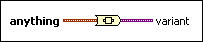

To Variant Function
Owning Palette: Variant VIs and Functions
Requires: Base Development System
Converts any LabVIEW data to variant data. You also can use this function to convert ActiveX data to variant data.

 Add to the block diagram Add to the block diagram |
 Find on the palette Find on the palette |